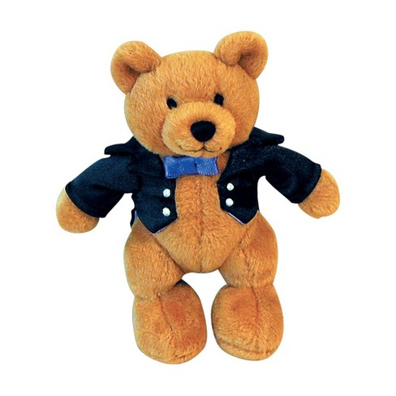
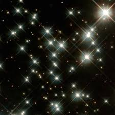

"Twinkle, Twinkle, Little Star" is a popular English lullaby. The lyrics are from an early-19th-century English poem by Jane Taylor, "The Star". The poem, which is in couplet form, was first published in 1806 in Rhymes for the Nursery, a collection of poems by Taylor and her sister Ann. It is sung to the tune of the French melody "Ah! vous dirai-je, maman", which was published in 1761 and later arranged by several composers, including Mozart with Twelve Variations on "Ah vous dirai-je, Maman". The English lyrics have five stanzas, although only the first is widely known. It has a Roud Folk Song Index number of 7666. This song is usually performed in the key of C major.
Source: https://en.wikipedia.org/wiki/Twinkle,_Twinkle,_Little_Star
| Verse Num | Line Num | Lyrics |
|---|---|---|
| 1 | 1 | Twinkle, twinkle, little star, |
| 1 | 2 | How I wonder what you are! |
| 1 | 3 | Up above the world so high, |
| 1 | 4 | Like a diamond in the sky. |
The composer Wolfgang Amadeus Mozart is remembered for his precociousness, his prolific output, and his beautiful and memorable melodies. With all due respect to the famous opening bars of Eine kleine Nachtmusik, probably the most familiar melody associated with Mozart is known to English speakers as “Twinkle, Twinkle, Little Star.” Indeed, it is commonly believed that the tune was one of Mozart’s earliest compositions, written when he was a child for his older sister, Nannerl. Alas, the story isn’t true.Source: https://www.britannica.com/story/did-mozart-write-twinkle-twinkle-little-star
BUY THIS BUY THIS
Maybe Mozart wrote THE THREE BEARS!!!
| Verse Num | Line Num | Lyrics |
|---|---|---|
| 2 | 1 | When the blazing sun is gone, |
| 2 | 2 | When he nothing shines upon, |
| 2 | 3 | Then you show your little light, |
| 2 | 4 | Twinkle, twinkle, through the night. |
So who composed the tune itself? No one knows. The melody of “Ah, vous dirai-je, Maman” was first published (without words) in Les Amusements d'une Heure et Demy (1761), a collection of music to be played at garden parties. The collection is attributed to a man named Boüin, but there is no evidence that he personally wrote the music. Although some scholars have suggested that the tune might be as old as 1740, the identity of its composer is still a mystery.
Source: https://www.britannica.com/story/did-mozart-write-twinkle-twinkle-little-star
SCRAPING or VAPING?
Maybe try them both?
| Verse Num | Line Num | Lyrics |
|---|---|---|
| 3 | 1 | Then the traveller in the dark |
| 3 | 2 | Thanks you for your tiny spark; |
| 3 | 3 | He could not see where to go, |
| 3 | 4 | If you did not twinkle so. |
As for “Twinkle, Twinkle, Little Star,” it originated as a poem written by the English author Jane Taylor and was published in 1806 as “The Star.” Sometime later the poem was set to the melody of “Ah, vous dirai-je, Maman.” (The earliest known appearance of the words and the music together dates to 1838.) As you may have already realized, it’s not the only set of alternative lyrics for the tune. Among the other songs that have made use of the melody are “Baa, Baa, Black Sheep,” the alphabet song (“A-B-C-D-E-F-G”), and a German sing-along (“Ist das nicht ein Schnitzelbank?”).
Source: https://www.britannica.com/story/did-mozart-write-twinkle-twinkle-little-star
| Verse Num | Line Num | Lyrics |
|---|---|---|
| 4 | 1 | In the dark blue sky you keep, |
| 4 | 2 | And often through my curtains peep, |
| 4 | 3 | For you never shut your eye |
| 4 | 4 | Till the sun is in the sky. |